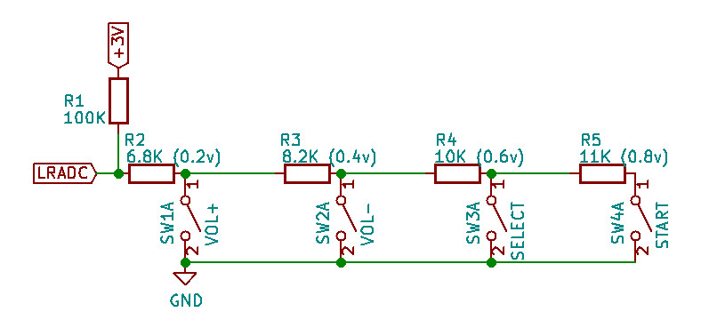
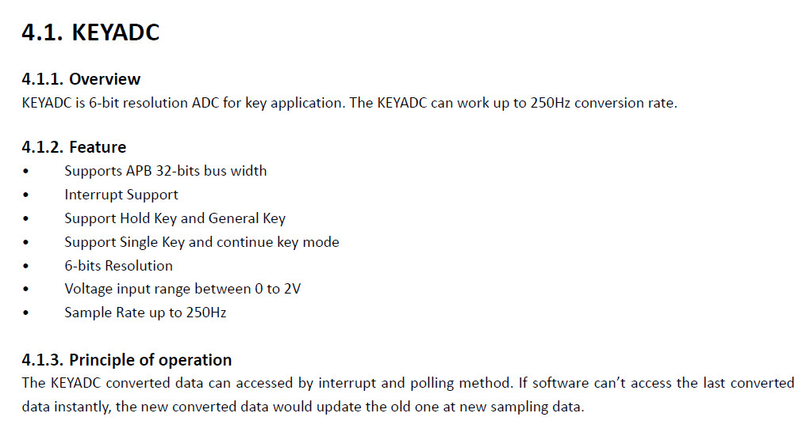
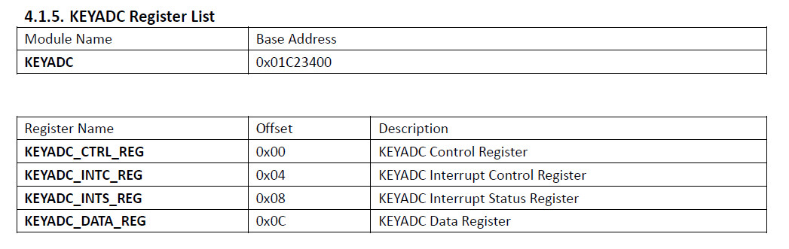
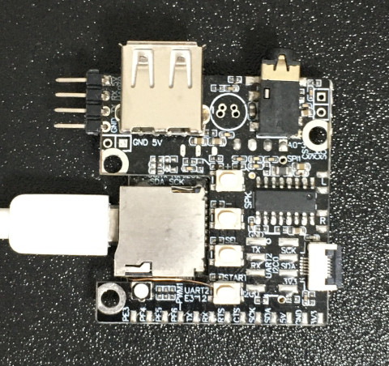
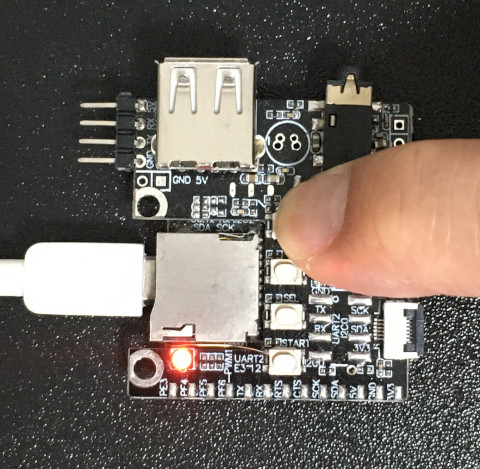

參考資料：
http://nano.lichee.pro/
https://mangopi.org/mangopi_r
按鍵採用電阻分壓方式

| VOL+ | 0.2v |
|---|---|
| VOL- | 0.4v |
| SELECT | 0.6v |
| START | 0.8v |
P.S. 電阻分壓方式可以解決I/O不足的問題，但是，缺點就是無法偵測多按鍵同時按下
KEYADC具有6bits解析度，量測範圍是0~2v，取樣率可達到250Hz


.global _start
.equ GPIO_BASE, 0x01c20800
.equ PE_CFG0, (GPIO_BASE + (4 * 0x24) + 0x00)
.equ PE_DATA, (GPIO_BASE + (4 * 0x24) + 0x10)
.equ ADC_BASE, 0x01C23400
.equ ADC_CTRL, (ADC_BASE + 0x00)
.equ ADC_INTC, (ADC_BASE + 0x04)
.equ ADC_INTS, (ADC_BASE + 0x08)
.equ ADC_DATA, (ADC_BASE + 0x0c)
.arm
.text
_start:
.long 0xea000016
.byte 'e', 'G', 'O', 'N', '.', 'B', 'T', '0'
.long 0, __spl_size
.byte 'S', 'P', 'L', 2
.long 0, 0
.long 0, 0, 0, 0, 0, 0, 0, 0
.long 0, 0, 0, 0, 0, 0, 0, 0
_vector:
b reset
b .
b .
b .
b .
b .
b .
b .
reset:
ldr r0, =PE_CFG0
ldr r1, =0x01000000
str r1, [r0]
ldr r0, =PE_DATA
ldr r1, =0x40
str r1, [r0]
ldr r0, =ADC_CTRL
ldr r1, =0x00000001
str r1, [r0]
ldr r0, =ADC_INTC
ldr r1, =0x00000001
str r1, [r0]
0:
ldr r0, =ADC_INTS
ldr r1, [r0]
and r1, #1
cmp r1, #0
beq 0b
ldr r0, =ADC_INTS
ldr r1, =0x00000001
str r1, [r0]
ldr r0, =ADC_DATA
ldr r1, [r0]
cmp r1, #10
bge 1f
ldr r0, =PE_DATA
ldr r1, =0x00
str r1, [r0]
b 0b
1:
ldr r0, =PE_DATA
ldr r1, =0x40
str r1, [r0]
b 0b
.end
完成

